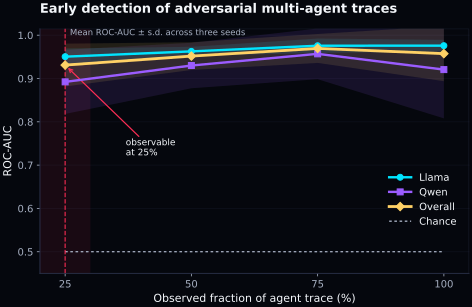
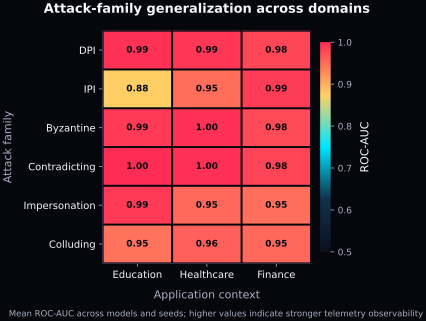
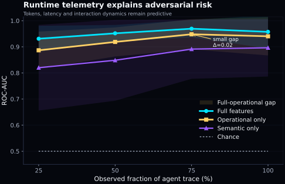

Workflow execution
Run LLM-based multi-agent workflows across benign and adversarial settings.
Telemetry-driven AI safety for agentic systems
Runtime telemetry for detecting unsafe information flows before multi-agent failures become final.
Safety in LLM-based multi-agent systems is not only about whether systems fail, but whether their failures become observable before harm.
Core idea
LLM-based multi-agent systems are not merely prompt pipelines. They are runtime communication systems where agents exchange messages, call tools, consume tokens, accumulate latency, and propagate information.
FlowGuard studies whether unsafe behavior leaves measurable signals in the execution trajectory before the final answer is produced.
Research question
Method overview
FlowGuard converts multi-agent executions into prefix-level telemetry traces and evaluates whether adversarial behavior becomes detectable before completion.
Run LLM-based multi-agent workflows across benign and adversarial settings.
Measure tokens, latency, tool calls, interaction dynamics, and runtime cost.
Construct 25%, 50%, 75%, and 100% execution prefixes.
Detect adversarial information flows before final output generation.
Estimate whether telemetry signatures generalize across attack families.
Test consistency across seeds, domains, and model families.
Experimental setup
Llama and Qwen.
Education, healthcare, and finance.
Repeated stochastic runs for robustness.
DPI, IPI, Byzantine, Contradicting, Impersonation, and Colluding.
Key findings
Finding 1
Most attacks become visible within the first 25% of the agent trace.
Finding 2
Operational runtime features recover most of the adversarial detection power.
Finding 3
The telemetry signal persists across seeds, models, domains, and attack families.
Publication figures



Why it matters
As LLM-based agents become components of larger workflows, safety must move beyond final-output inspection. FlowGuard frames runtime telemetry as a lightweight observability layer for identifying unsafe information flows while the system is still running.
This perspective supports safer deployment of multi-agent systems in sensitive domains, improves model protectability analysis, and opens a path toward adaptive information-flow control.
Resources
Citation
@article{chagas2026flowguard,
title={FlowGuard: Adaptive Information Flow Control for Secure Multi-Agent AI},
author={Chagas, Eduarda},
journal={Under review},
year={2026}
}